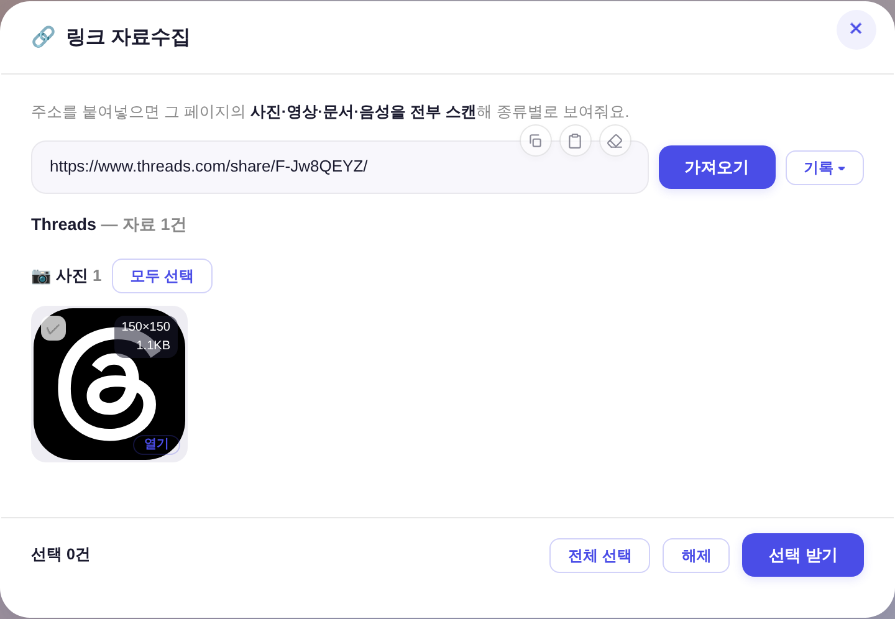
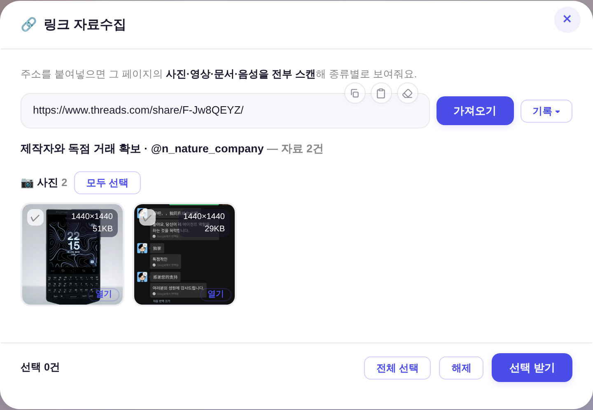
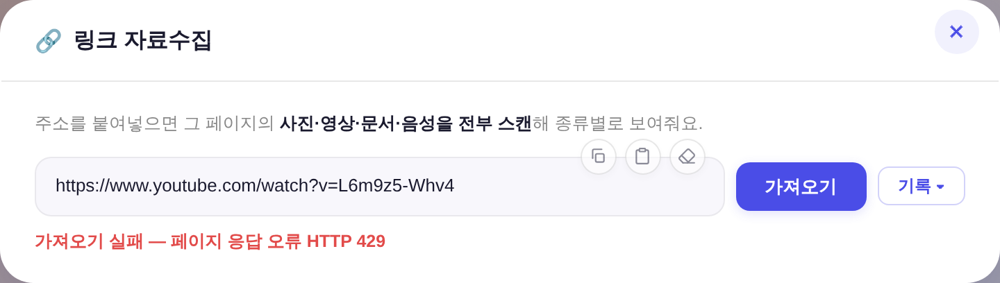
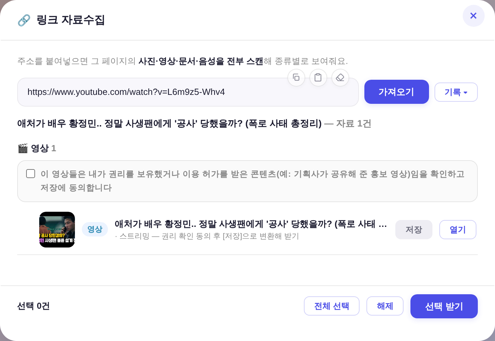

운영자 지시: 「스레드 다운이 안가져와지는데 확인좀해줘 · 지금 뭔가 가져오긴하는데 프로필 이런것만 가져오는듯 · 이렇게 안될때도 많음(유튜브 429)」
증빙 = 앱의 진짜 UI 코드(openLinkGrab/_lgRender)를 헤드리스로 실구동하고 /api/linkgrab 응답만 실측 페이로드로 바꿔 렌더 — 마크업 재현 0.
전 = 구 코드가 실제 페이지에서 뽑은 결과, 후 = 새 코드 실제 응답(둘 다 같은 실주소 threads.com/share/F-Jw8QEYZ/ · youtube.com/watch?v=L6m9z5-Whv4).
① 스레드 공유 링크 — 「자료 1건 = UI 로고」 → 게시물 사진 2장
전 — Threads · 자료 1건(스레드 UI 스프라이트 1.1KB)

후 — 글 제목·작성자 + 사진 2건(1440×1440 원본)

원인 = 스레드 웹앱은 Relay/Comet 스택("Barcelona")이라 사진·영상이 <img>/<video> 태그로 안 나오고 <script type="application/json" data-sjs> 안 SSR JSON(image_versions2/video_versions)에만 있다 → 태그·확장자 축의 범용 스캔이 줍는 건 UI 스프라이트뿐.
게다가 /share/ 주소는 브라우저 UA로 열면 200 + 빈 라우팅 셸(og:* 0건)이고 비-브라우저 UA로 열어야 302로 정규 주소를 알려준다 — 그래서 share 첫 요청만 봇 UA, 원글 페이지는 다시 브라우저 UA로 연다.
로직 정본 = muteno/nomute-editor의 검증된 yt-dlp 추출기(nomute_threads.py) 이식.
② 유튜브 — 「HTTP 429」 전량 실패 → 영상 1건 확정
전 — 가져오기 실패 · 페이지 응답 오류 HTTP 429

후 — 제목·썸네일 + 권리 동의 + [저장]

원인 = 유튜브가 데이터센터 IP(워커 egress)에 429를 준다. 그런데 애초에 그 페이지를 열 이유가 없다 — 받을 파일이 HTML 안에 없고, 실측상 429가 안 떠도 결과는 파비콘·JS 번들 36건이며 정작 붙여넣은 그 영상은 목록에 없었다.
→ 스트리밍 주소는 페이지를 안 열고 주소만으로 항목을 확정하고(영상 id·썸네일은 이미 주소에 있다), 제목만 oEmbed로 보강한다(실패해도 결과 불변).
회귀 확인(변경 의도 밖 경로)
· 링크트리(linktr.ee/spotify) 6건 · 위키백과 사진 64건 · 스레드 프로필 주소(게시물 아님) → 종전대로 범용 스캔 강등 · 없는 게시물 코드 → 오류 없이 0건.
· 스레드 영상 게시물(@wowkim0510 캐러셀) = 영상 4건 추출 · 실제 프록시 수신 확인(사진 image/webp 51KB · 영상 video/mp4 3.1MB, 둘 다 HTTP 200).
· 게이트 = check_design 1605/1605 ✓ · check_refs ✓ · smoke_login PASS · smoke_layout PASS.